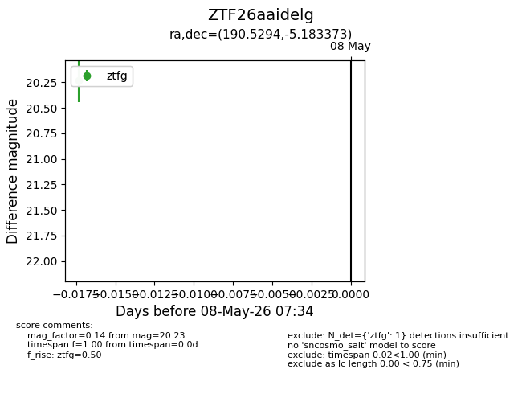
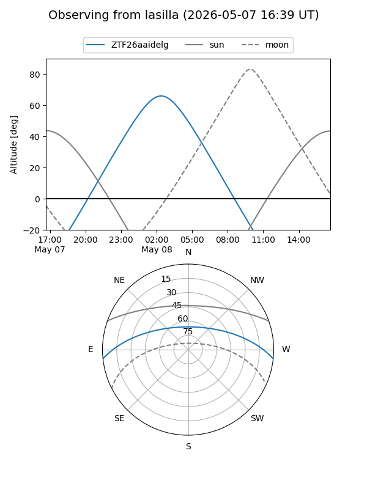
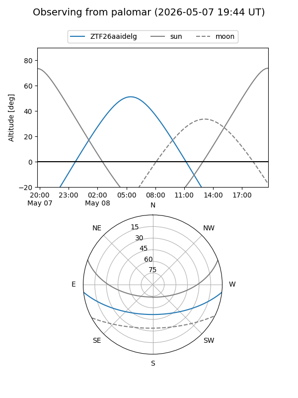

ZTF26aaidelg
Target ZTF26aaidelg at 2026-05-08 07:36
Aliases and brokers:
FINK: link
Lasair: link
ALeRCE: link
alt names
ZTF26aaidelg (ztf,fink_ztf)
Coordinates:
equatorial (ra, dec) = 190.5294,-5.18337
equatorial (HMS+DMS) = 12:42:07.06,-05:11:00.14
galactic (l, b) = (298.5971,+57.60991)
Flags:
Photometry:
last ztfg=20.23
1 ztfg detections
Lightcurve

Visibility


Additional plots